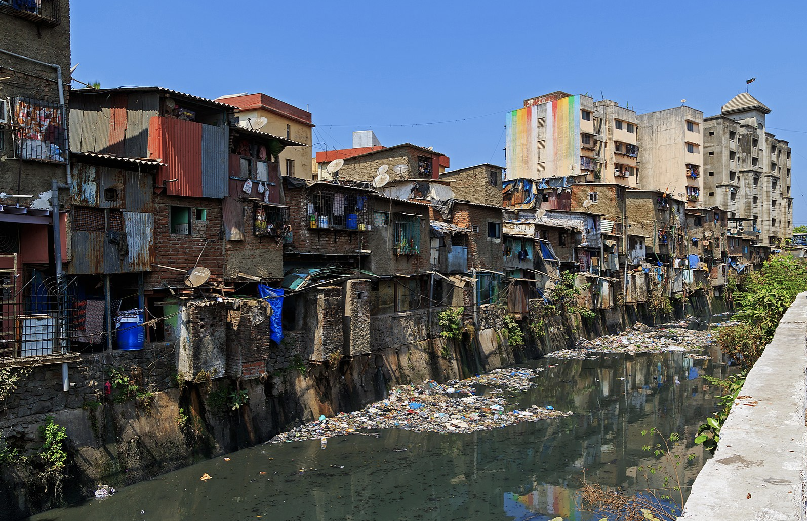

This week had a lot of very technical content around the concepts of corrections, merging images and enhancement. Honestly, a bit overwhelming at first. The good news is that a lot of the methods covered this week are automated, when using tools like Google Earth Engine. Therefore, for me it is important to understand the broad concepts rather than how each method is exactly implemented. The table below provides short explanations for some of the concepts of this week. I used the lecture slides, the practical content and Chat GPT to compile this table.
Warning: package 'kableExtra' was built under R version 4.3.2
Term
Description
Geometric Correction
Remote sensed data often have image distortion issues due to the angle its taken from (off-nadir, meaning not directly down), the topography, or the rotation of the earth. This can be fixed by taking Ground Control Points (GPS) and matching them with known points in the image and a reference dataset (goldstandard, we know its corrrect) using different algorithms.
Atmospheric Correction
There are two sources of environmental attenuation: Atmospheric scattering and Topographic attenuation. Absorption and scattering crate atmospheric haze and makes pixels bleed into one another, which makes the image less clear (less contrast)
Orthorectification correction
Georectification = giving coordinates to an image Orthorectification = removing distortions... making the pixels viewed at nadir
Dark Object Subtraction (DOS)
Method to correct for atmospheric effects and sensor-specific artifacts. In DOS, the darkest objects in an image, such as shadows or non-reflective surfaces, are identified and assumed to represent the true "dark" or background signal. The pixel values of these dark objects are then subtracted from the entire image, effectively normalizing the data and reducing atmospheric influence. DOS helps enhance the contrast and accuracy of satellite imagery, particularly in areas with varying atmospheric conditions or topography.
Digital Number (DN)
The raw number, or the value that the sensor sees.
Radiance
3.2 Application
This week was very concept heavy. Therefore, I decided to use this week to engage with an application area of remote sensing that I have always been interested in (mapping informal settlements in cities) and see if I come across some of the concepts described above.
Informal settlements are often the most vulnerable parts of cities. They tend to be located in areas that are extremely vulnerable to the effects of climate change, such as flooding or heat and lack basic urban services, such as sanitation infrastructre or public transport. Makeshift houses leave residents exposed to the elements, and provide little protection against intruders. Many people living in informal settlements lack security of tenure and are under constant threat of eviction. What may look like temporary neighborhoods often remain for decades. One of the most famous examples, is Dharavi in Mumbai. Dharavi is one of the largest slums in the world right in the center of Mumbai (Figure 3).
knitr::include_graphics('figures/w3p1.png')

Figure 3:Darawi
I looked into a few studies that use remote sensing to map informal settlements and turns out its “a mammoth task due to the spatial heterogeneity of urban landscape components, requiring complex analytical processes.” Matarira, Mutanga, and Naidu (2022)
It seems that many studies use Very High Resolution (VHR) and High Resolution (HR) satellite imagery. Such data sets are expensive and therefore not accessible for local governments, especially in low and middle income countries, where most slums are. “Using Open Data to Detect the Structure and Pattern of Informal Settlements: An Outset to Support Inclusive SDGs’ Achievement” (n.d.) More recently, researchers tried to find methods to work with openly available datasets such as Sentinel or Landsat to identify informal settlements.
I looked more closely at a study conducted in Durban South Africa. Matarira, Mutanga, and Naidu (2022) The paper investigates different data input combinations in order to find the one that presents most accurate and reliable findings.The study uses Google Earth Engine to process Sentinel 2 images of the city of Durban integrating spectral and textural features in order to understand the extent and location of informal settlements. The study found that a classification based on spectral bands and textural information has the highest accuracy. It was able to detect informal settlements with a 80% accuracy.
The method used was pretty complex and I didn’t understand it fully. I still summarized the key steps below, which I found useful as it gave me a rough understanding of the workflow and effort of such an analysis. Broad steps of the method listed below:
3 images were selceted to form a composite, and a median value was assigned to each pixel, resulting in a single image used for processing.
Extraction of spectral and texture features from Sentinel 2A bands,
Establishing different combinations of these feature types to be tested,
Random Forest Classification using GGE,
Replication of understand accuracy of the classier’s perfromance, (20 classification results were obtained for each input feature set).
Performance evaluation of feature subsets through a comparison of classification results of different feature subsets against the original feature set from which they were derived in order to establish if feature reduction would significantly improve informal settlement identification or not.
Accuracy assessment to develop the relative comparative performances of different feature sets, against the benchmark experiment and was tested using Pixel-Based Accuracy Assessment and patch based.
Regression between Extracted Informal Settlement Areas and Ground Truth Data.
It is great that the data used in this study is free. However, it still does not seem very accessible to a local government in a LMIC because technical capabilities to procure, let alone conduct such a study seems immense. It would be great if there was a spatial application that allowed city governments to map slums in their city in an automated way or at least with less technical requirements. Ollie Ballinger actually managed to built an interesting Google Earth Engine Application to map slums in Dar es Salam in Tansania. It is different to the approach taken in Durban because he remove the formal buildings and than applies classification only on the remaining areas. (Figure 4)
This week was a little painful, both for me (difficult concepts) and my laptop (computational power needed for working with remote sensing data).It got me excited to get started on Google Earth Engine, where a lot of these processes are automated and run on a cloud. It sounds like that makes it easier to focus on the analysis and get to the fun and interesting bits more quickly, rather than spending a long time making corrections and enhancements to the data. Thank you Google…
I was not aware how difficult it is to map informal settlements with remote sensing data. I actually assumed it would be one of the easier methods as it is so well known. I can’t say that I completely understood the method used in Durban. However, it was still a worth wile exercise for me because it gave me a better idea of the workflow for remote sensing. It seems to be roughly: - Choose and download the images, - Make a composite, - Make corrections on it, - Identify the relevant features (spectral and texture), - Classification, - Validating and testing accuracy of classification, - Spatial analysis (e.g. regression).
Matarira, Dadirai, Onisimo Mutanga, and Maheshvari Naidu. 2022. “Google Earth Engine for Informal Settlement Mapping: A Random Forest Classification Using Spectral and Textural Information.”Remote Sensing 14 (20, 20): 5130. https://doi.org/10.3390/rs14205130.